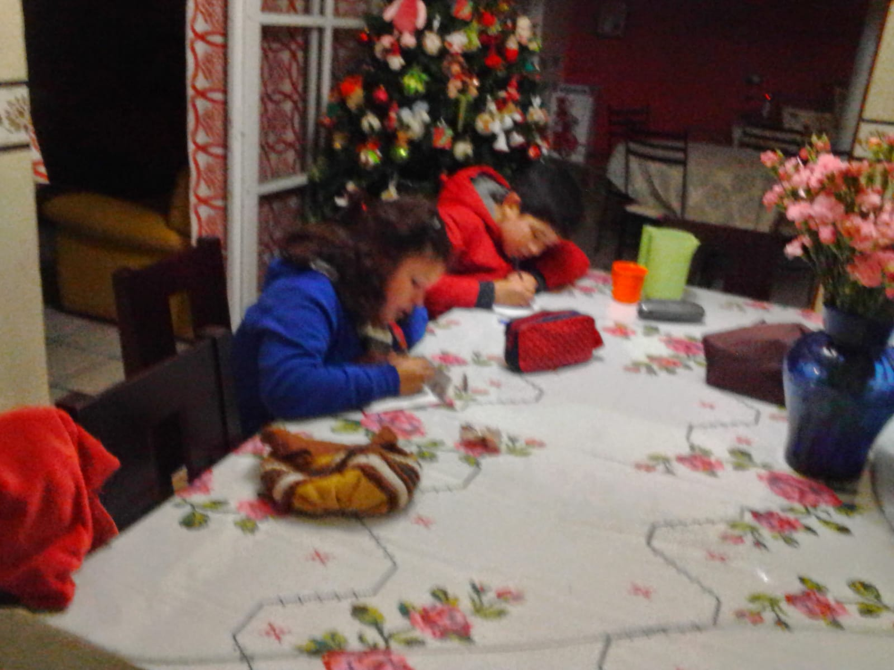
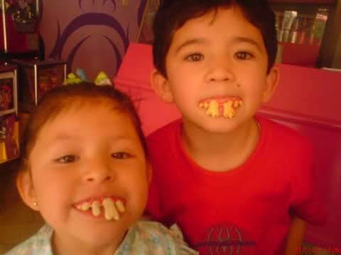
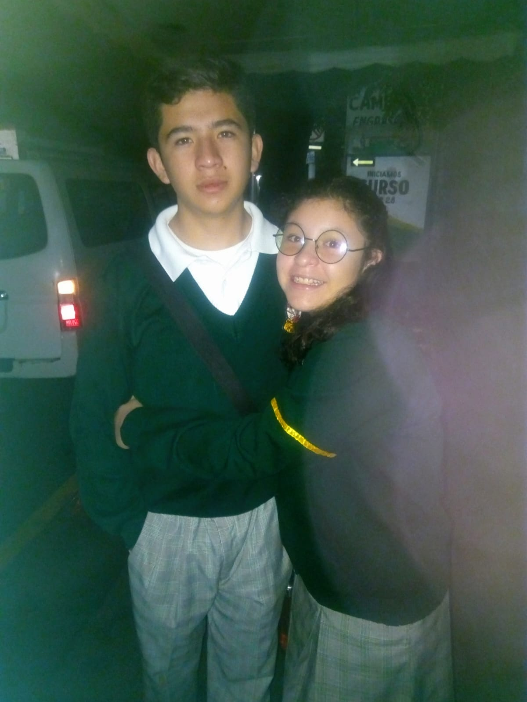
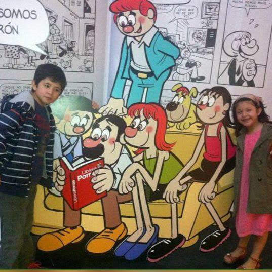
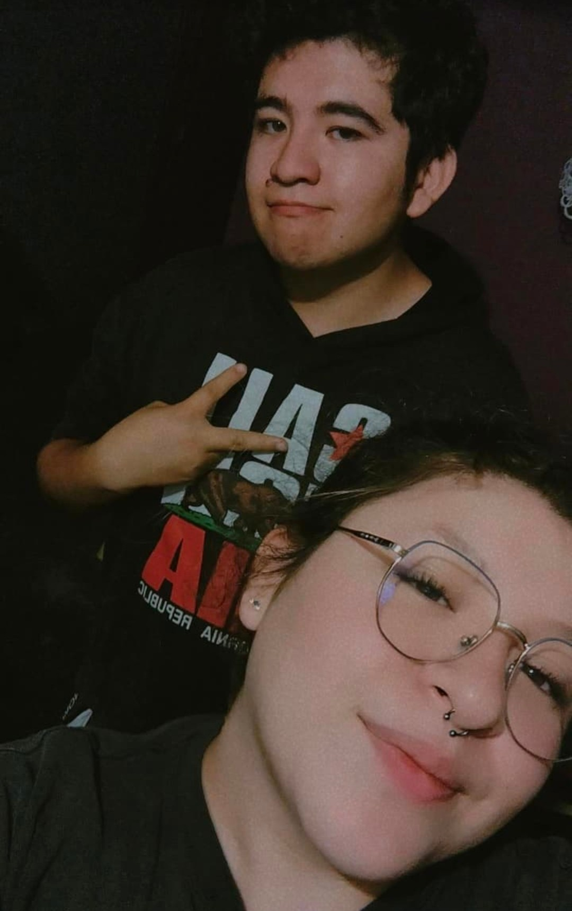
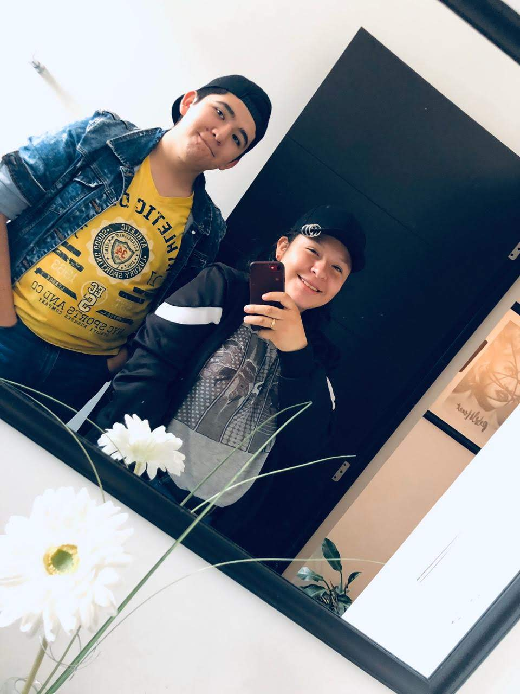
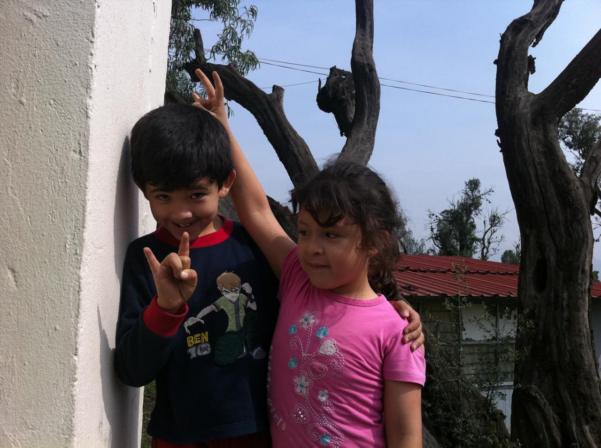
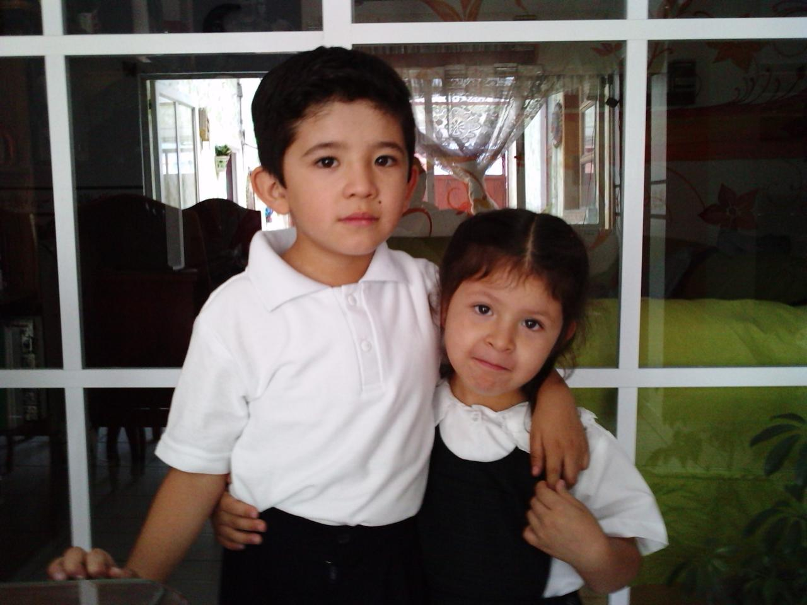

PARA MI HERMANA, CON TODO MI CORAZÓN
Alondra &
Uriel
Dos caminos, una historia.
Un vínculo que la vida me regaló.
Ocho recuerdos.
Una vida de historias.
No importa cuánto tiempo pase: siempre habrá momentos que me recuerden la suerte que tengo de tenerte.








ALONDRA, MI HERMANA
Hay algo que
quiero que sepas.
Hoy quiero detenerme un momento para agradecerle a la vida, a Dios y, sobre todo, a nuestra mamá por haberme dado uno de los regalos más importantes que tengo: tú.
A veces pienso en nuestra historia y me doy cuenta de que quizá no he sido el hermano que merecías. Sé que he cometido errores y que hubo ocasiones en las que te lastimé, física, verbal o emocionalmente. No quiero justificar nada ni hacer como si no hubiera pasado. Me duele reconocer que pude haberte causado dolor, especialmente durante tu niñez, tu adolescencia y también en esta etapa de tu vida.
Perdóname por esas veces en las que no supe cuidarte, comprenderte o tratarte con el cariño y el respeto que merecías. No puedo cambiar lo que ya ocurrió, pero sí puedo reconocerlo y esforzarme por ser una mejor persona y un mejor hermano para ti.
Quiero que me creas cuando te diga, mirándote a los ojos, que te amo. Te amo y te aprecio profundamente, no solamente como mi hermana, sino también como la mujer que eres: con tu propia personalidad, tus sueños, tus decisiones, tus fortalezas y todo lo que te hace ser tú.
No quiero que estas palabras se queden solamente en una página bonita. Quiero demostrártelo con mis acciones, con respeto, paciencia, apoyo y cariño. No espero que olvides lo malo por leer esto; solamente deseo que sepas lo importante que eres para mí.
Tenemos 21 y 23 años, y todavía nos quedan muchísimas experiencias por vivir. Ojalá la vida nos permita seguir creciendo, aprendiendo y construyendo recuerdos. Quiero que sepas que cuentas conmigo y que siempre voy a agradecer tenerte como hermana.
Con todo mi amor,
Uriel ♡
PARA ALONDRA
No cambiaría
por nada el hecho
de ser tu hermano.
Gracias por existir. Gracias por ser mi hermana.